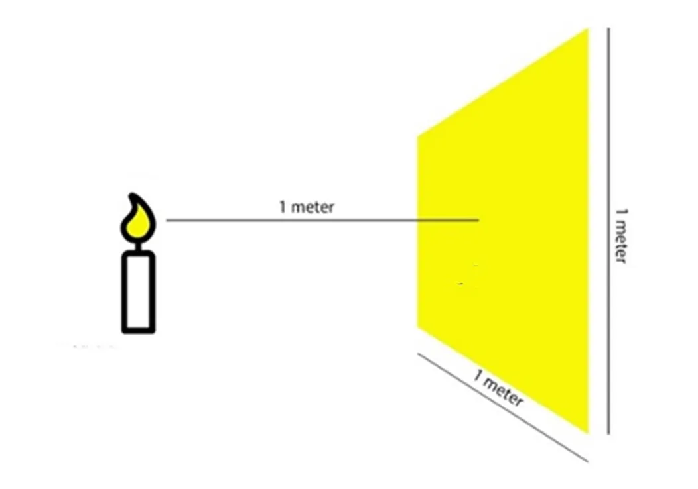
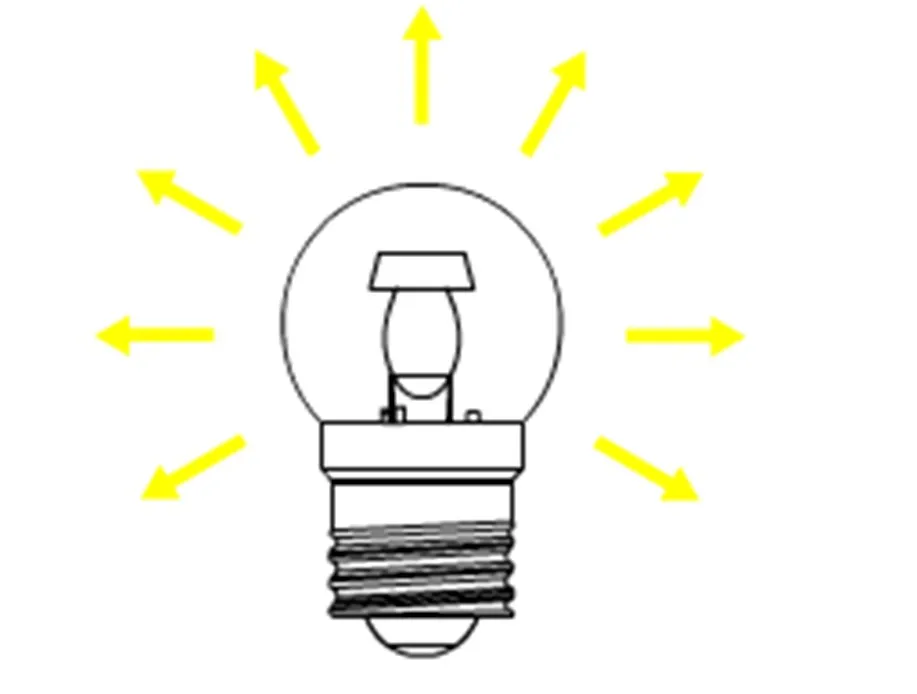
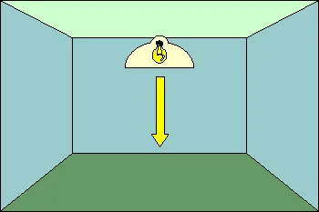
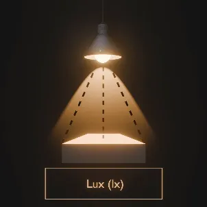
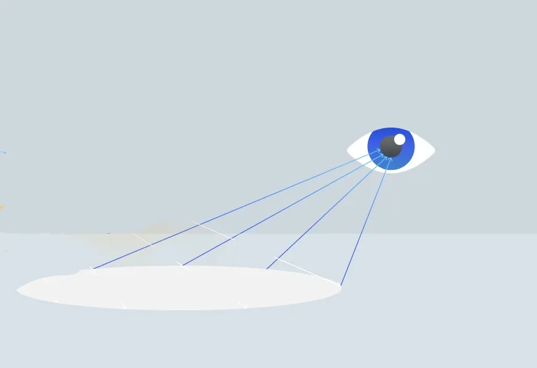
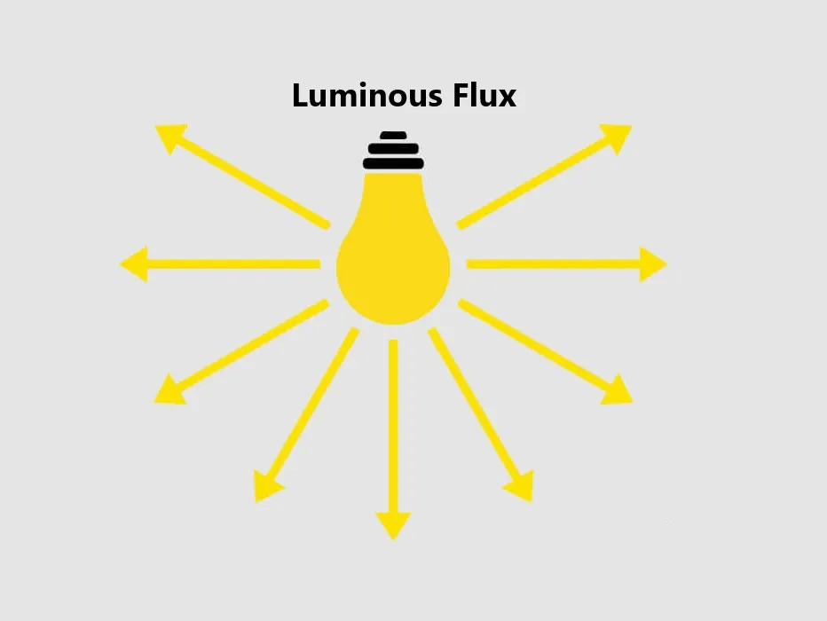
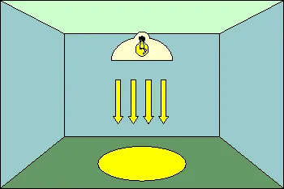
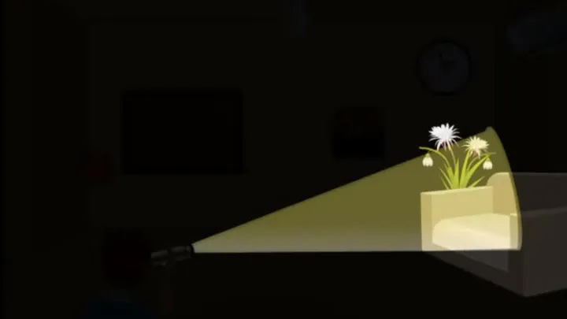

Hello, Ma! Select a quiz from the navigation bar to see the answers.
A place for people who are desperate for scores.
Check out the main page here (really cool Ma stuff)
This is Certified Ma Moment™
"Last year, there were 2 students who didn't join the Canvas for almost a semester and barely received any scores." So here's your chance.
"Parallel circuit, Chachoengsao Highway, 8 lanes. Max speed at 120km/h? TOO SLOW. I drive at 150km/h. Does anyone have parents who are police officers? Please, don't tell the police. I will give you 100 Baht."
And remember, \( F = ma \)
Answers for CW#2
Science
Questions 10
Question 1
What is the unit of light shown here?

Lux
The image shows light landing on a surface, which is the concept of illuminance. The correct unit for illuminance is lux (\(lx\)).
Question 2
What kind of light is shown here?

Luminous flux
The diagram shows light radiating in all directions from a source. This represents the total light output, which is called luminous flux.
Question 3
What kind of light is being shown here?

luminous intensity
The diagram of the single arrow pointing down represents light traveling in one specific direction. This concept is luminous intensity.
Question 4
What kind of light is being shown here?

illuminance
The image labeled "Lux" explicitly demonstrates the concept of illuminance—the measurement of light that falls upon a surface area.
Question 5
What kind of light is shown?

Luminance
The diagram of the eye shows light reflecting off a surface to be seen. This perceived brightness of a surface is called luminance.
Question 6
What kind of light is this?
luminous intensity
The car headlight produces a focused, directional beam of light. This measurement of brightness in a single direction is luminous intensity.
Question 7
What is the unit of measurement for this type of light?

Lumens
The image shows light radiating everywhere, which is luminous flux. The correct unit for measuring luminous flux is the lumen (\(lm\)).
Question 8
What type of light is this?

illuminance
This diagram illustrates light from a fixture covering a specific area on the floor. This measurement of light received by a surface is illuminance.
Question 9
What type of light is this and what is its unit of measurement?

luminous intensity - candelas
The classic candle diagram is used to define luminous intensity. The unit for measuring this directional brightness is the candela (\(cd\)).
Question 10
You can get more lumens from an 12 watt LED bulb than a 75 watt incandescent bulb.
True
LED bulbs are significantly more energy-efficient, producing more light (lumens) with far less electrical power (watts) than old incandescent bulbs.